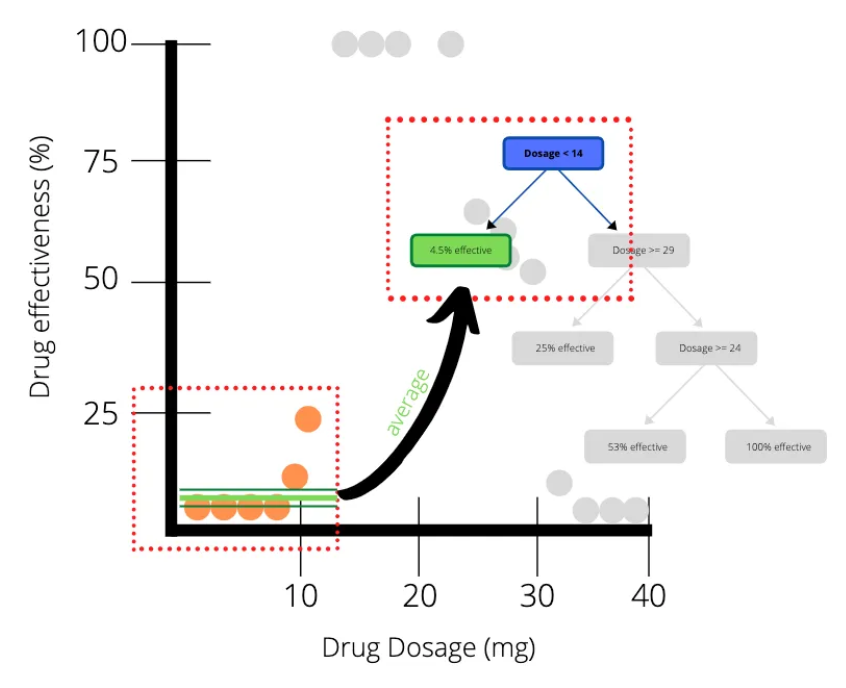
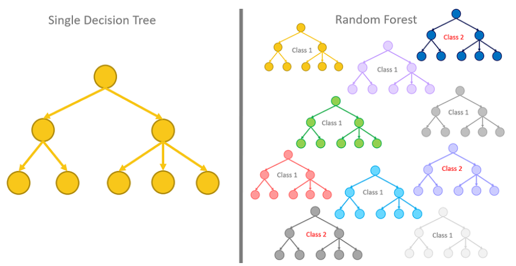
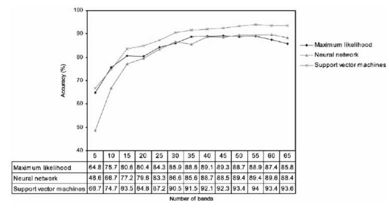

6 Classification
6.1 Summary
Classification and Regression Trees (CART) are a type of decision tree algorithm used for both classification and regression problems. In CART, the data is split into smaller and smaller subsets based on the values of predictor variables in a way that maximizes the homogeneity of the response variable within each subset. The algorithm recursively applies this splitting process until a stopping criterion is met.
One measure used to evaluate the performance of CART models is the Sum of Squared Residuals (SSR), which is the sum of the squared differences between the predicted and actual values of the response variable. The goal is to minimize the SSR in order to obtain a model that best fits the data.

Overfitting is a common problem in machine learning where a model is too complex and fits the training data too closely, resulting in poor performance on new, unseen data. This can occur when the model is trained with too much complexity or when it is trained on a dataset that is too small or unrepresentative.
Random forests are a type of machine learning algorithm used for classification and regression tasks. A random forest’s basic idea is to train multiple decision trees, each on a different subset of available data and a random subset of available features. When making a prediction, each tree in the forest makes its own prediction, and the final prediction is determined by a majority vote of all of the trees’ predictions.

Image classification is the process of labelling or categorising an image. The algorithm is trained on a set of labelled images in supervised image classification, which means that each image is associated with a specific category or label. The algorithm learns to recognise patterns or features in the images associated with each label, and then uses those patterns to make predictions on new, unlabeled images. Unsupervised image classification, on the other hand, entails grouping similar images together based on patterns or features identified by the algorithm.
To apply these concepts to imagery, we can perform image classification tasks using machine learning algorithms such as random forests. For example, we could train a random forest algorithm to recognise specific objects or features in labelled images, such as trees or roads. The algorithm can then predict the presence or absence of those objects or features in images when presented with new, unlabeled images. This image classification technique has a wide range of practical applications, including remote sensing and satellite imagery analysis, as well as computer vision and autonomous vehicles.
6.2 Applications
The classification application employs the Support Vector Machines (SVM) method to identify land cover types in a specific area. We can learn from this paper: Support vector machines for classification in remote sensing (Pal and Mather 2005). Support vector machines (SVM) are a promising development in machine learning research that is underutilised in the remote sensing community. In terms of classification accuracy, this study compares multiclass SVMs to maximum likelihood (ML) and artificial neural network (ANN) methods in two experiments. The two land cover classification experiments employ multispectral (Landsat7 ETM+) and hyperspectral (DAIS) data for test areas in eastern England and central Spain, respectively. The results show that the SVM classifier outperforms the ML and ANN classifiers in terms of classification accuracy, and that it can be used with small training datasets as well as highdimensional data.

6.3 Reflection
Classification has numerous practical applications in everyday life. Image classification is used in a variety of fields, including medicine, security, and entertainment. It can be used in medicine to identify tumours or other medical conditions in medical images such as CT scans or MRI scans.
Random forest is a machine learning algorithm that can be used for classification as well as regression. It is widely used in a variety of industries, including finance, healthcare, and marketing. In finance, for example, it can be used to forecast stock prices or assess credit risk. It can be used in healthcare to predict patient outcomes or to identify risk factors for certain diseases. It can be used in marketing to segment customers and predict their behaviour.
I personally participated in a hackathon and used the concept of image recognition and classification in healthcare that can be implemented in Indonesia.
Machine learning and classification algorithms, in my opinion, are important because they enable us to automate decision-making processes and make predictions based on large amounts of data. This can lead to more accurate and efficient decision-making, which can be useful in a variety of situations. It is important to note, however, that machine learning algorithms are not perfect and can be biassed or produce inaccurate results if they are not properly trained or validated.